Black Monochromes
Black Monochromes  Übermalung
Übermalung  Nothing
Nothing
 Radical
art
Radical
art
 Black Monochromes
Black Monochromes  Übermalung
Übermalung  Nothing
Nothing
 Radical
art
Radical
art
Arnulf Rainer
Übermalungen, Zumalungen, Überdeckungen, Überzeichnungen
|
|
|
|
| 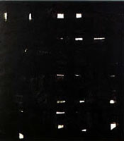 Gitterbild, 1953 |
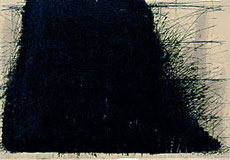 Überdeckung, 1954 |
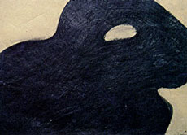 Hund, 1954/1955 |
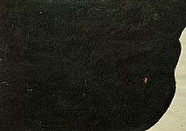 Zuhängung, 1955 |
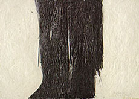 Baüme, 1955 |
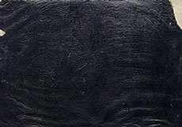 Überdeckung, 1955 |
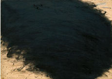 Grass Übermalung, 1955/1961 |
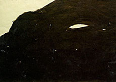 Aug und Nas, 1956 |
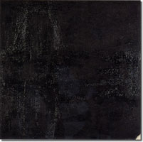 Schwarze Zumalung, 1956 |
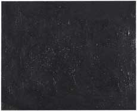 Übermalung, 1956 |
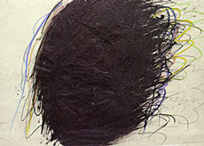 Ohne Titel (Überdeckung), 1957 |
Wolke, 1957 |
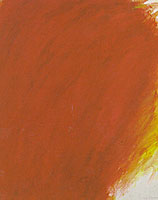 Rote Überdeckung, 1958 |
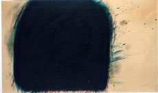
|
Bild mit der schönen Ecke, 1961/1964 |
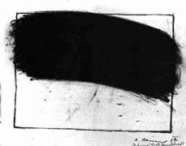 Überzeichnete Landschaft, 1962 |
Übermalung, 1962/1964 |
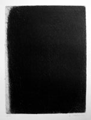 Wand, 1963/1966 |
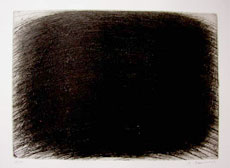 Schall, 1966 |
Laberl, 1972/1980 |
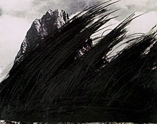 Sturm, 1975 |
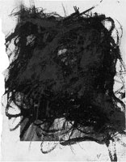 Ohne Titel, 1976 |
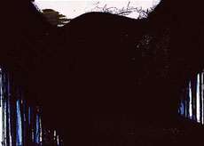 Christus, 1979/1980 |
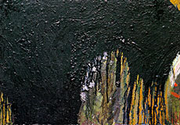 Ohne Titel, 1979/1982 |
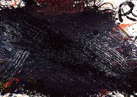 Ohne Titel, 1981/1982 |
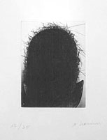 Ohne Titel, 1994 |
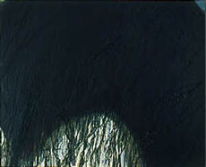 Ohne Titel, 1994 |
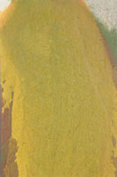 Ohne Titel, 1996 |
Schiff, 2000 |
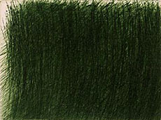 Grünes Kornfeld, 2001 |